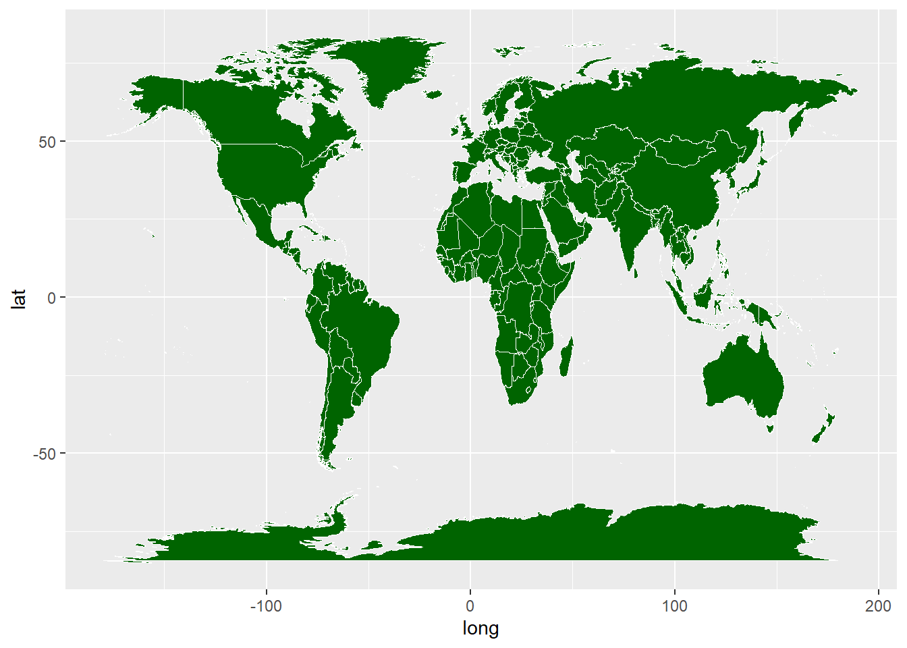
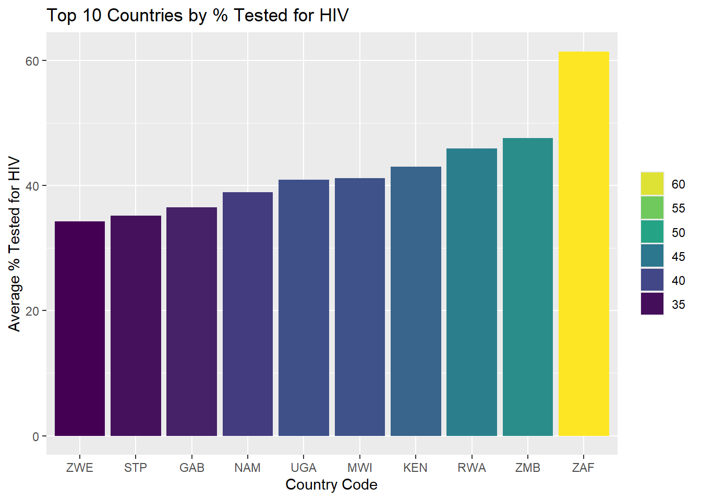
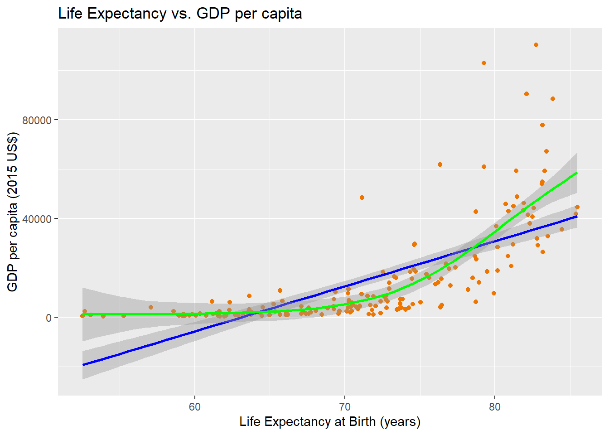
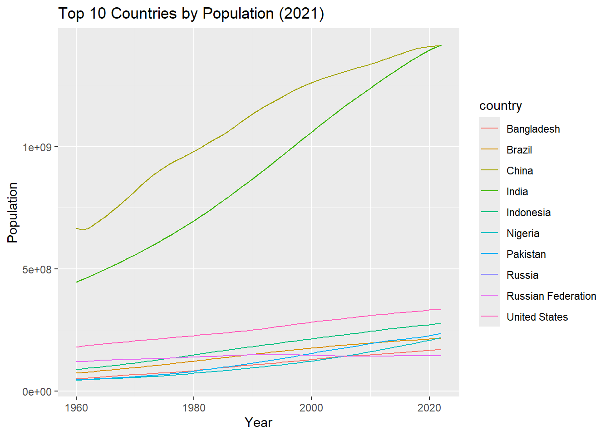

[1] 38UNICEF Coding Assignment
Data Transformations
World Map graph
I was unable to incorporate a story into this particular graph due to the layout of my data set. However, had I of manged to link the proportion of population practicing open defecation to the graph we would expect to see a darker shade of green around central Africa in countries like Niger as this is what my data has shown.
Warning: Using `size` aesthetic for lines was deprecated in ggplot2 3.4.0.
ℹ Please use `linewidth` instead.Warning in geom_map(data = world_map, map = world_map, aes(long, lat, map_id =
region), : Ignoring unknown aesthetics: x and y
Bar Chart of HIV Testing
The bar chart shows the top ten countries with the highest rates of testing for HIV amongst young people. To my initial surprise all of the top countries shown were African as I was aware that there was no direct link between HIV and open defecation. However, upon further research I discovered that there was a high prevalence of HIV amongst African countries and hence the high rates of testing. Also, there have been great initiatives launched by global health organisations to increase awareness around HIV with increased education and widespread testing campaigns made possible through increased funding.

Scatter Plot of GDP per Capita vs Life Expectancy in 2021
`geom_smooth()` using formula = 'y ~ x'
`geom_smooth()` using formula = 'y ~ s(x, bs = "cs")'
We see above the relationship between GDP per Capita and Life Expectancy at birth in 2021 across the world. The relationship does not seem entirely linear, as the strength of the positive relationship between these 2 variables changes at around the 75 year mark where it become much stronger.
When we try to fit a simple linear regression model (blue) to the data, it cannot accurartely represent the relationship as it does not fit the data well and actually predicts negative GDP pre Capita at lower values of Life Expectancy. To counter this, we use a “GAM” model (green) which allows for non-linear relationships. This fits the data much better and we can see how the relationship between the 2 variables change as Life Expectancy increases.
Time series of % GDP
We can view the population of the top 10 most populated countries (in 2021) in the unicef data set over the years. We can see how China and India have always been leading the pack here.
